Una mattina di gennaio ci ha visto in compagnia di Piero G., clautano e grande conoscitore di questi luoghi. Tutte le informazioni e le precisazioni toponomastiche presenti in questa pagina sono dovute a lui (e ad un suo informatore).
Partiamo un po' prima del ponte di Settefontane: c'è il sentiero che passa per i resti della casera vecia di Settefontane (sul lato opposto della valle rispetto a quella attuale) e che porta nel ciol de la Sanditha.
La volta scorsa avevamo commesso un errore clamoroso prendendo la prima rampa di bosco che si apre in dx orografica; finimmo sulla cengia dei Ròdoi, percorrendola interamente fino ad intercettare, ore più tardi, il sentiero che sale da Nuci a metà fra Col de Vitór e Col de Barzàn.
Questa volta continuiamo per il ciol passando accanto al peròn dal pegorêr. La rampa giusta è quella successiva.
Il ciol de la Sanditha appare di arcigna bellezza. Vedi quei contrafforti turriti in centro foto? Le carte topografiche riportano lì il toponimo «La Rocca», ma quello semmai è il denth de l'udithe (quello più alto a sx, da qui poco appariscente). Il nome «La Rocca» indica genericamente tutta la zona dirupata e piena di salti che sottostà ai prati delle Pale Candele.
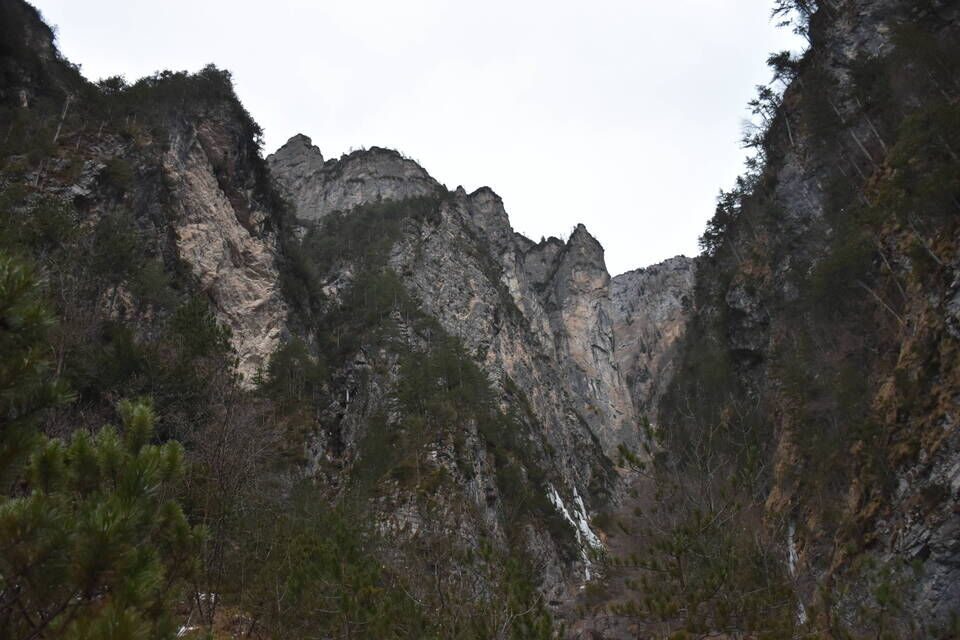Lassù il difficile passaggio del bus de la Sanditha che permette di salire sul M. Dôf dal Col de le Tornarethe, in altre parole la «curta de Bregolina»..
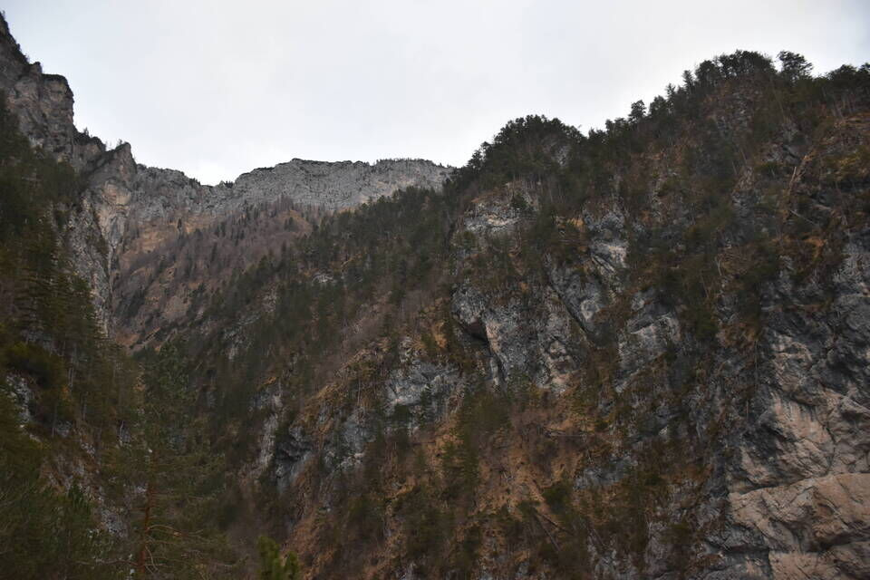Sul "secondo" Col de Contron Piero ci spiega il da farsi. Lui c'era già passato decenni fa.
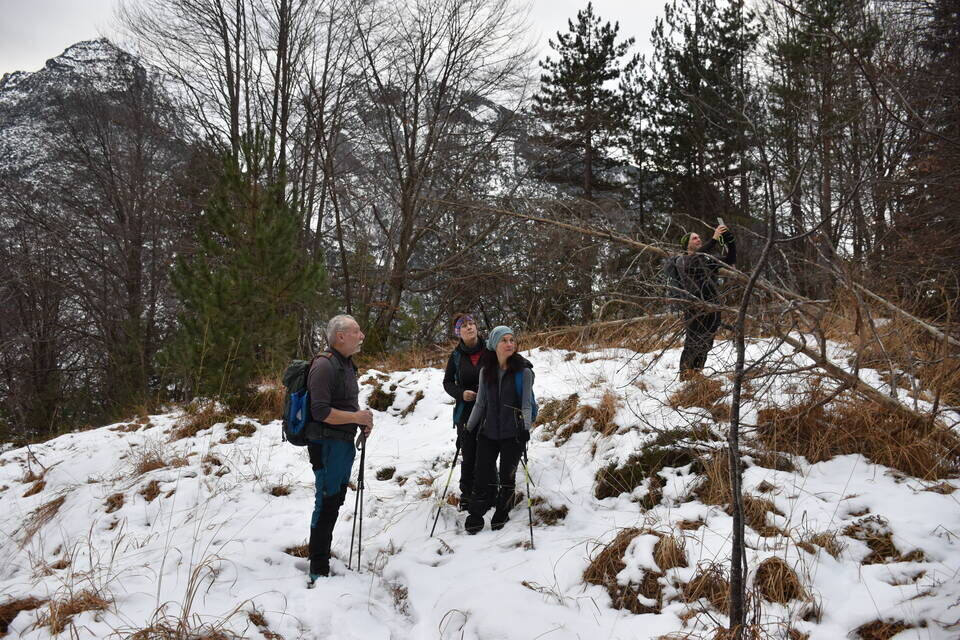Ecco ciò che vediamo dal Col de Contron: a dx il ciol de la Rocca che costituisce la nostra direttrice e a cui fa capo la forcelletta del Tàmer de la Crous, sottostante alla q1730; in centro la costa che la q1730 protende verso est-sud-est, il cui punto più alto visibile in foto è la q1570; a sx la linea di cengia dadàlt dove passa il truoi de le fede: esso poi abbandona tale linea per salire poco sotto la q1570 e traversare lungo la cengia Scalinèt fino ad intercettare il troi che sale da Nuci.
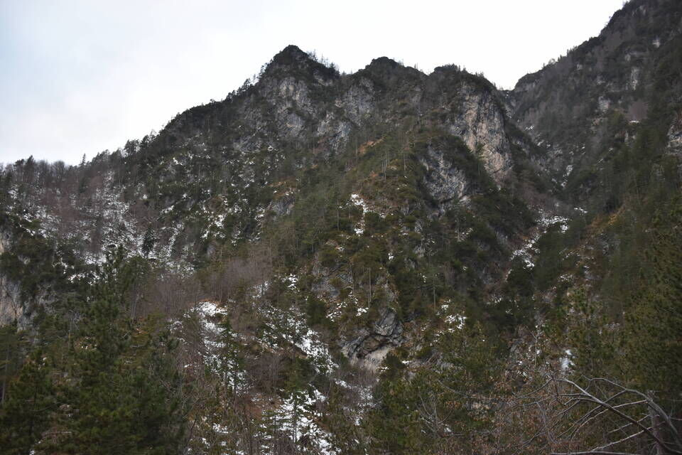Poco prima del ciol de la Rocca ci alziamo per ripide tracce di animali, per arrivare ad una cengia esposta che corre in sx orografica. Pietro ci controlla col binocolo dal Col de Contron.
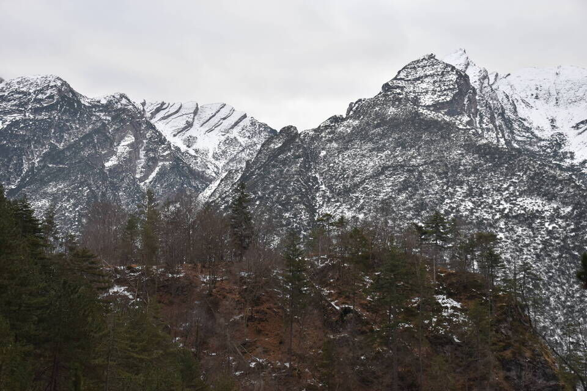Ad una certa sulla cengia si presenta un bivio: su o giù? Vediamo dei tagli giù, e allora via nel ciol, tramite un bel passaggio di cengia. Però... è la via sbagliata: bisogna sempre mantenersi in sx orografica senza scendere nel rio. Con qualche peripezia riusciamo a ritornare sulla retta via.
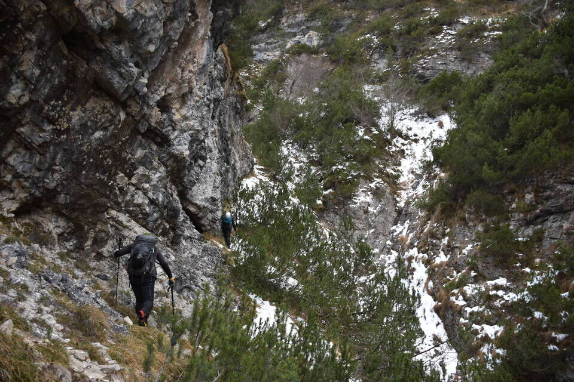Simboli iniziatici.
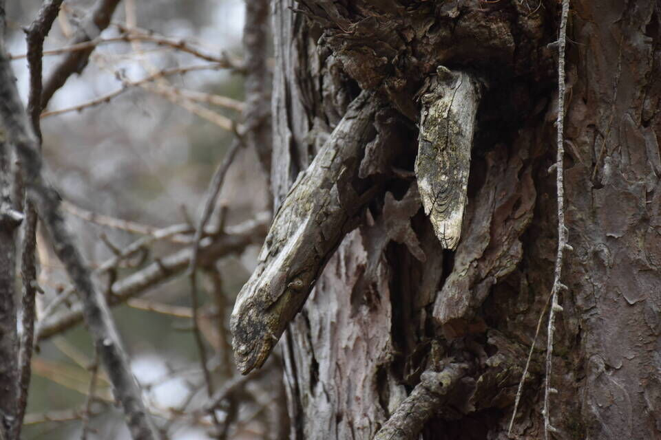Sulle belle coste in sx orografica ci alziamo seguendo ottimi sentieri di camosci, che a posteriori posso affermare essere ciò che rimane del vecchio sentiero. Arriviamo su una selletta sotto un bello spigolo: ecco il ripidissimo versante de «La Rocca», tutto a salti di roccia, che sottostà ai prati delle Pale Candele.
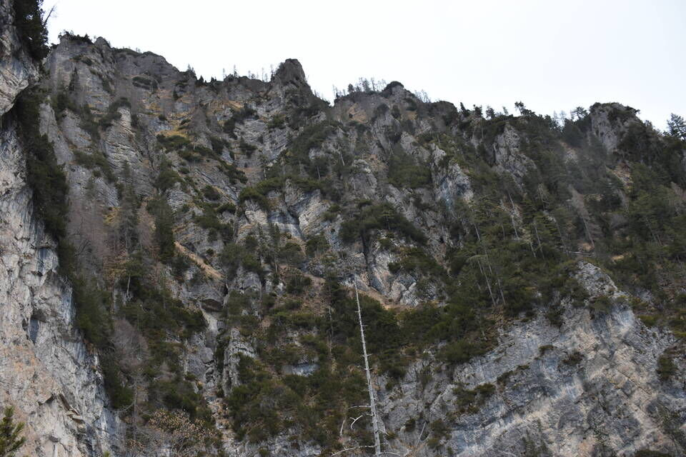
Vaghi per mezz'ora «in mezzo al nulla» per tracce di camosci, ti fermi a tirare il fiato, guardi il larice e... ritrovi l'Uomo. Ciò è bello e confortante.
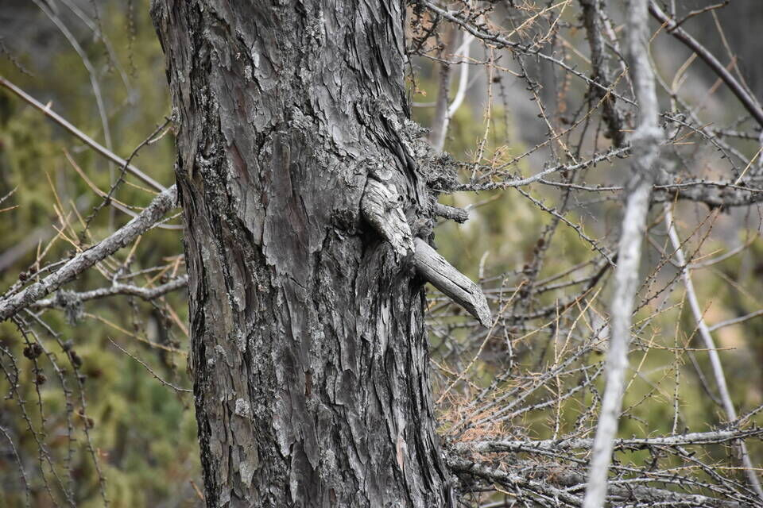Arriviamo al Tàmer de la Crous, che è quel prato a dx; noi ovviamente ci siamo arrivati dall'altro versante.
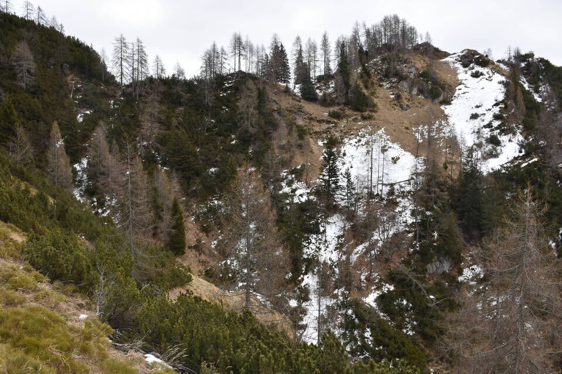Dal Tamerùt, che è il piccolo prato dirimpetto al Tàmer de la Crous, facciamo una deviazione panoramica per spiare il Turlón. A proposito: il piccolo ciol, quasi sempre asciutto, che divide il Tamerùt dal Tàmer de la Crous è detto ciolìt e non bevadór come scritto sulle carte; quest'ultimo idronimo spetta al torrente principale che scende dalla giogaia Turlón-Pale Candele e in particolare dalla Forcella del Turlón (a dx nella foto successiva). Il Bevadór è la parte superiore del ciol di Nuci.
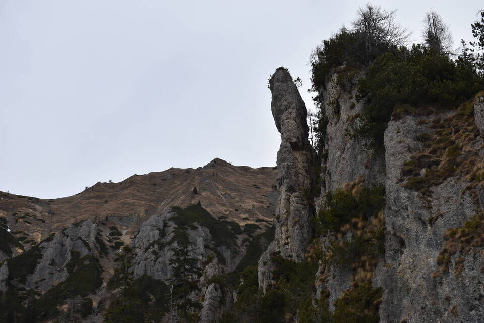Qui in foto si bene la Forcella del Turlón con il canalone terminale del ciol Bevadór: una volta salivano a lato per le pale in sx orografica.
Quella valle mugosa a sx sulle carte (CTR, IGM, Tabacco) viene denominata «Val de Stale», ma è un errore. Infatti durante una escursione stavo parlando con Piero G. del Bosc de Val (e in particolare del bosco di faggi sul lato est poco sotto la cresta, dove abbiamo rinvenuto vecchi tronchi tagliati) e lui mi ha detto che «noi [clautani] quel bosco lo chiamiamo anche Bosc de Val de Stale», il che mi ha fatto sorgere un grosso sospetto. Sono poi andato a rileggere la relazione di Salice, nella guida Dolomiti Orientali II a pagina 409. Salice scrive:
A) DA V. SETTIMANA, al prato Tamerut [...]; quivi si prende un sent. che attraversa quasi pianeggiante alcuni valloni; arrivati al vallone che precede la V. de Stale, su diritto e per pendio erboso e ripido in vetta, senza difficoltà. — Ore 6.
Se la Val de Stale fosse davvero quella mugosa, allora il vallone che la precede dovrebbe essere il canalone del ciol Bevadór che adduce alla Forcella del Turlón, ma: 1) si tratta di uno stretto canalone e non di un vallone; 2) il canalone è impercorribile per via di salti di roccia; 3) non viene nominata la forcella; 4) dalla forcella non si sale dritti in cima, semmai ci si collega alla via comune. Dunque il vallone della relazione è quello mugoso in foto e la Val de Stale è quella «successiva», cioè la valle fra Bosc de Val e Turlón (a sx fuori foto). Questa ipotesi è stata pure confermata da un anziano di Claut interrogato a riguardo da Piero.Certo, la relazione di Salice è esageratamente grossolana (come nella miglior tradizione della guida Berti!) e fa quasi sorridere leggere il «senza difficoltà» mentre si guarda quella selva di mughi (ma immagino che negli anni '50 i mughi fossero molti di meno). La via tra l'altro è stata percorsa più volte negli ultimi anni dal solito Luca B., che ha anche risalito tutta la valle partendo dal punto in cui questa interseca il Bevadór.
Comunque, ad avvalorare la mia tesi c'è anche questo fatto qui: è davvero inverosimile che quella valle mugosa avesse qualche utilità per i valligiani. Inoltre, così si spiega il toponimo «Bosc de Val» che è da intendersi «Bosc de Val de Stale». E non per ultimo, c'è la parola «stale» (stalla): cosa mai centrerebbe con una valletta di mughi poco sotto la cima? 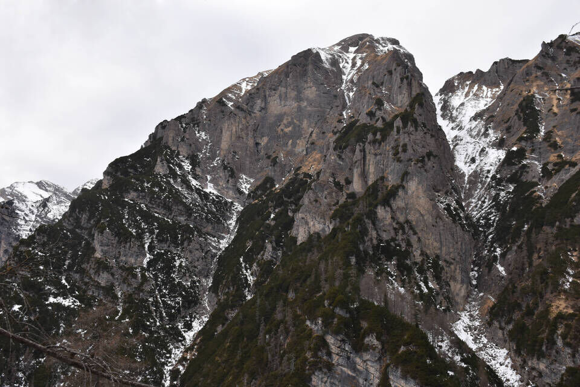
Foto di repertorio, dall'ex CAI 385: il 2 indica quella valle mugosa che sulle mappe è segnata come Val de Stale, l'1 la vera Val de Stale.
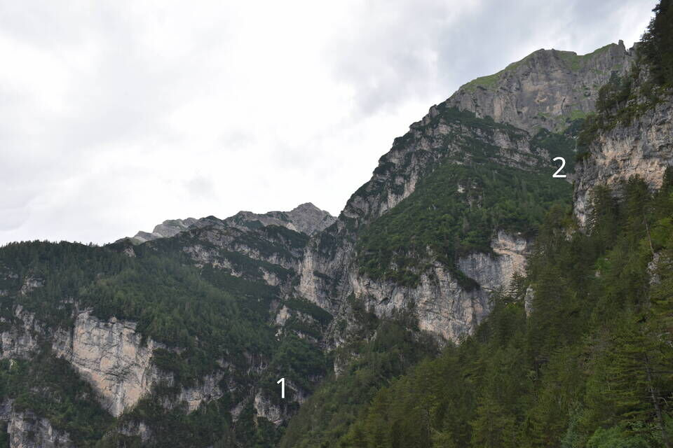Scendiamo per il truoi de le fede, molto bello e semplice, tutt'altra cosa rispetto al sentiero di Nuci. Curioso che a suo tempo abbiano scelto quel sentiero anziché questo come CAI 385. Questo tratto in foto è cosi ben tagliato che il sentiero risulta evidentissimo ad esempio a chi percorre la val Piovìn.
Tra l'altro, pure la comitiva della SAF (L. D'Agostini, A. e G. Coppadoro) con guida Alessandro Giordani Nathio, durante la prima salita turistica al Turlón e alle Pale Candele, salì per questo sentiero alla Sella dei Fàures (3-4 agosto 1900). Vedi qui.
Le crode della val Piovìn.
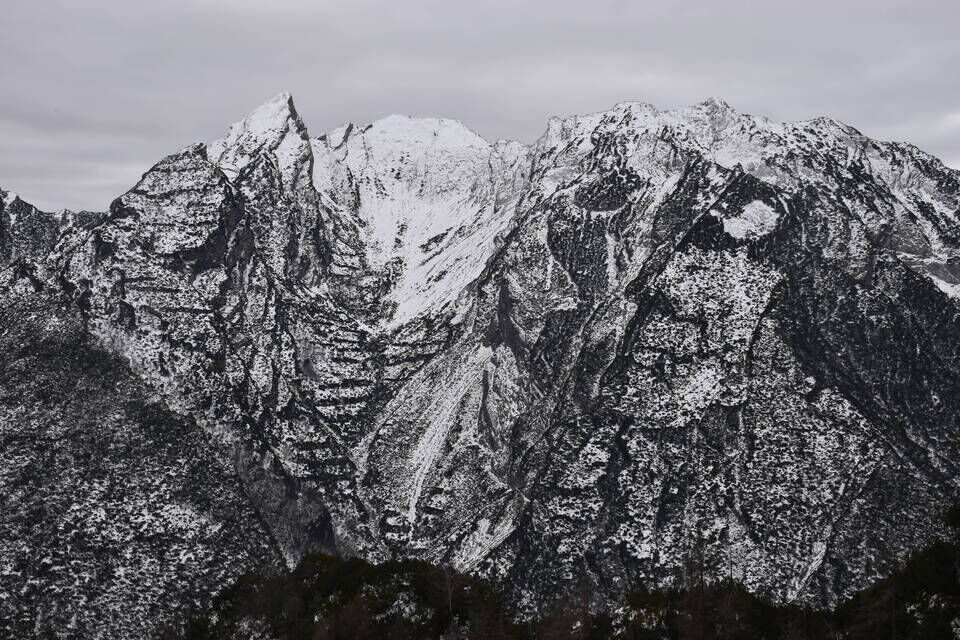Cima Ciol de Sass e cima Ciolesàn.
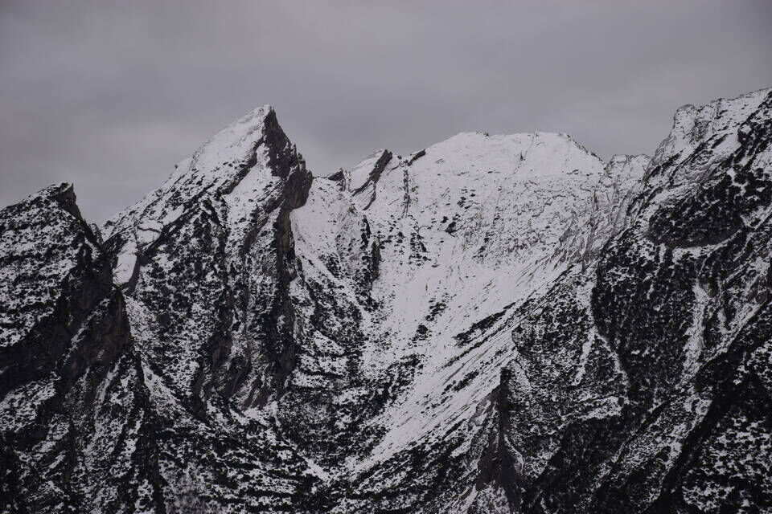 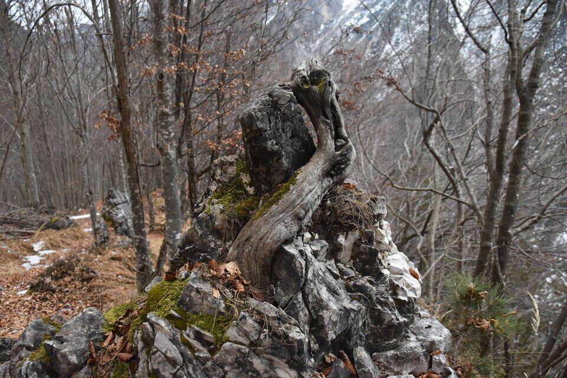***
Riassunto su carta IGM 1:25000 con alcune correzioni.
TC = Tàmer de la Crous, T = Tamerùt, TM = Tàmer de Mieth (di mezzo).
Puntinati, in blu il truoi de le fede, in rosso il sentiero de la Rocca, in azzurro la cengia dei Ròdoi.
***